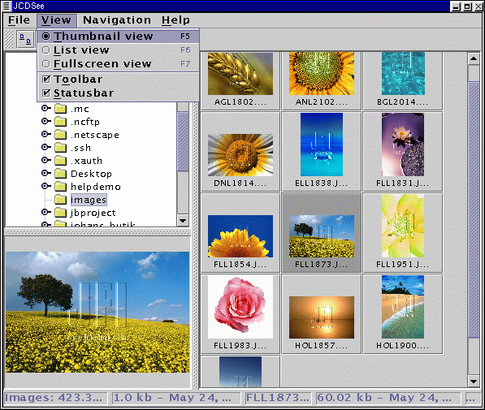

JCDSee Help - Views |
|
Thumbnail view
Images are display as small thumbnails, as shown below. By selecting
an image it will also be displayed in the preview panel. The size of the
thumbnails can be set in the Settings dialog, see section about settings.

You can browse by using the arrow-keys on the keyboard or by using space and backspace. By pressing enter the selected image will be displayed in the fullsreen view.
List view
Images are listed in a list where the filename, filesize, and image dimension are displayed.
This view uses the same navigation keys as thumbnail view.
Fullscreen view
Fullscreen view is for viewing the complete image. Here you can zoom in and out.
For more information about fullscreen view, see section about fullscreen.